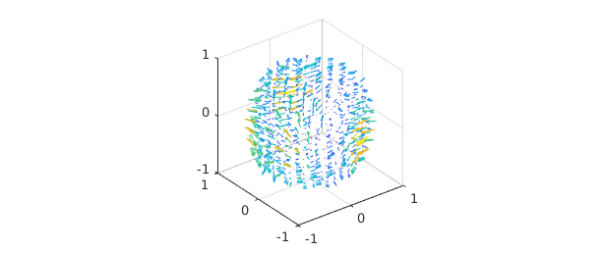
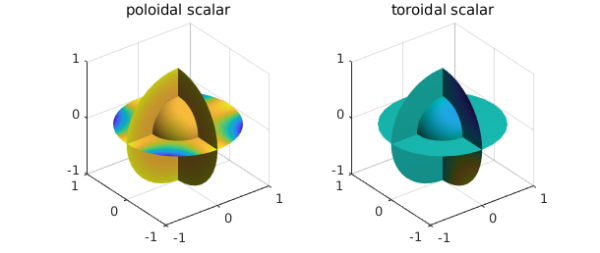
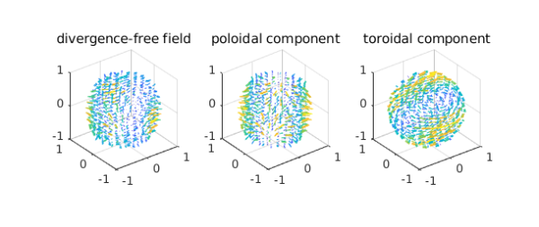

The poloidal-toroidal decomposition
In vector calculus, the poloidal-toroidal (PT) decomposition [1] is a restricted form of the Helmholtz-Hodge decomposition [3]. It states that any sufficiently smooth and divergence-free vector field in the ball can be expressed as the sum of a poloidal field and a toroidal field. It is used in the analysis of divergence-free vector fields in geomagnetism, flow visualization, and incompressible fluid simulations.
For a given unit vector $\mathbf{r}$, a toroidal field, $\mathbf{T}$, is one that is tangential to $\mathbf{r}$, while a poloidal field, $\mathbf{P}$, is one whose curl is tangential to $\mathbf{r}$, i.e., $$ \mathbf{r}\cdot \mathbf{T} = 0, \quad \mathbf{r}\cdot (\nabla \times \mathbf{P}) = 0. $$
The PT decomposition for vector fields in the unit ball
Let $w$ be a divergence-free vector field in the unit ball. Then the PT decomposition says that $w$ can be written as the sum $$ w = \nabla\times\nabla\times(\mathbf{r}P_w) + \nabla\times(\mathbf{r}T_w), $$ where $P_w$ and $T_w$ are scalar-valued potential functions (called the poloidal and toroidal scalars). In this setting, the natural unit vector $\mathbf{r}$ to select is the unit radial vector pointing away from the origin. The scalars $P_w$ and $T_w$ are unique up to the addition of an arbitrary function that only depends on $r$.
In this Example, we show how this decomposition is computed by Ballfun and introduce the command PTdecomposition [2].
To illustrate the decomposition, we take the following divergence-free vector field:
Pw = ballfun(@(x,y,z)cos(x.*y)); Tw = ballfun(@(x,y,z)sin(y.*z)); w = ballfunv.PT2ballfunv(Pw, Tw); quiver( w )

We start by checking that $w$ is divergence-free:
norm( div( w ) )
ans =
4.162099210310871e-10
Computing the PT decomposition
The scalars $P_w$ and $T_w$ are unique up to the addition of an arbitrary function that depends only on $r$. A popular additional constraint is to select $P_w$ and $T_w$ so that their integrals over the unit sphere are zero. Under this additional restriction, they satisfy the relations [1] $$\nabla_1^2 P_w = -rv_r, $$ $$\nabla_1 T_w = -\Lambda_1\cdot w, $$ where $\nabla_1^2$ and $\Lambda_1$ denote the dimensionless Laplacian and surface curl, respectively. These operations are defined in the spherical coordinates $(r,\lambda,\theta)$ by $$ \nabla_1^2 = \frac{1}{\sin\theta}\partial_\theta(\sin\theta\partial_\theta) +\frac{1}{\sin^2\theta}\partial_\lambda^2, $$ $$ \Lambda_1\cdot w = \frac{1}{\sin\theta}[\partial_\theta(w_\lambda\sin\theta) -\partial_\lambda w_\theta]. $$ These constraints are imposed in the solver by requiring that the zeroth Fourier modes in $\lambda$ and $\theta$ are zero. This actually means that if $P_w$ is represented by a Chebyshev-Fourier-Fourier series, i.e., $$\sum_{i=0}^n\sum_{j=-n/2}^{n/2}\sum_{k=-n/2}^{n/2}a_{i,j,k}T_i(r)e^{\mathbf{i}j\lambda}e^{\mathbf{i}k\theta},$$ then $a_{i,0,0} = 0$ for $0\leq i\leq n$.
The PTdecomposition command
Ballfun has a command PTdecomposition that computes the PT decomposition of a divergence-free vector field. The decomposition of $v$ can be computed as follows:
[Pw, Tw] = PTdecomposition( w );
subplot(1,2,1)
plot(Pw), title('poloidal scalar')
subplot(1,2,2)
plot(Tw), title('toroidal scalar')

Visualizing the decomposition
Here are plots of the decomposition.
[P,T] = ballfunv.PT2ballfunv(Pw,Tw);
subplot(1,3,1)
quiver( w ), title('divergence-free field')
subplot(1,3,2)
quiver( P ), title('poloidal component')
subplot(1,3,3)
quiver( T ), title('toroidal component')

Recovering the vector field from the PT scalars
The original vector field can be recovered from the poloidal and toroidal scalars since $$ w = \nabla\times\nabla\times(\mathbf{r}P_w) + \nabla\times(\mathbf{r}T_w). $$ This operation is implemented in Ballfun in the PT2ballfunv command:
v = ballfunv.PT2ballfunv(Pw, Tw);
As a sanity check, we confirm that the decomposition has been successful:
norm( v - w )
ans =
1.281385019969649e-12
References
[1] G. Backus, Poloidal and toroidal fields in geomagnetic field modelling, Reviews of Geophysics, 24 (1986), pp. 75-109.
[2] N. Boullé and A. Townsend, Computing with functions on the ball, in preparation.
[3] Y. Tong, S. Lombeyda, A. Hirani, and M. Desbrun, Discrete multiscale vector field decomposition, ACM Trans. Graphics, 22 (2003), pp. 445-452.